De aparelho de streaming a plataforma aberta de computação
LINUX
💻Computador
🖥️Servidor
⚖️Balança
🖨️Impressão 3D
🔬Dispositivo especializado
TX9 ProMXQ ProBTV11Projeto CompSTEAM OS · IFSC
Apresentação técnica — recuperação do controle do hardware
O aparelho por dentro
— TX9 · visão explodida dos componentes
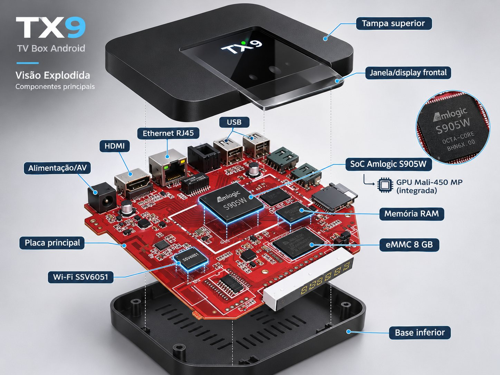
A seguir, entramos no coração da placa: o SoC Amlogic S905W — e o que ele carrega por dentro.
Dentro do SoCSystem on a Chip — da placa real ao silício do Amlogic S905W
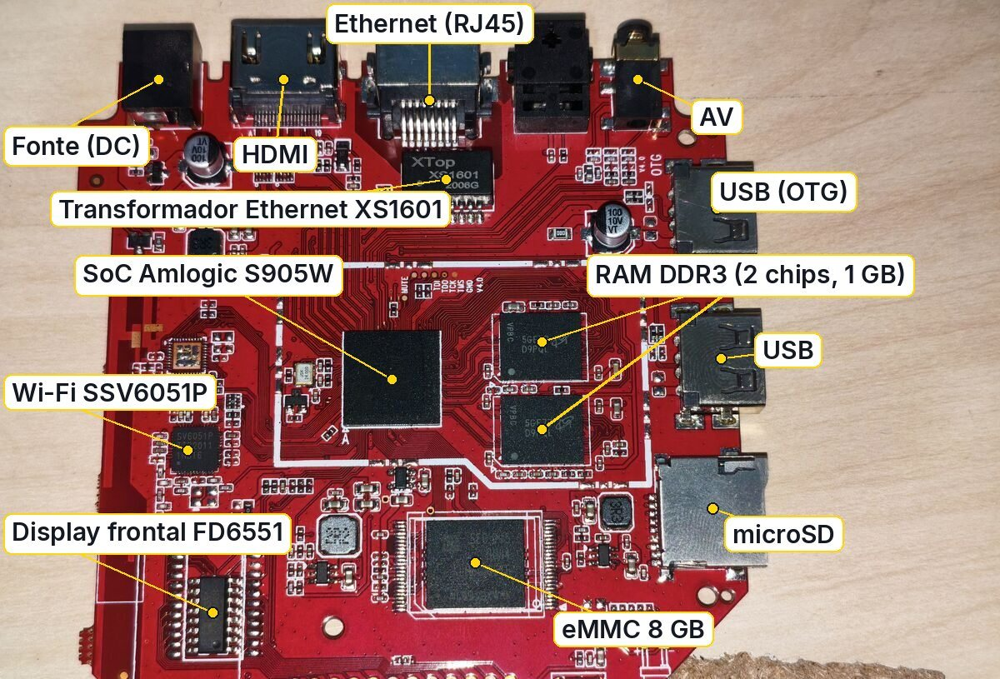
1 · A placa real — P281 / TX9 (Amlogic S905W)2 · Ampliando o SoC Amlogic S905W…3 · Por dentro do chip — o diagrama de blocos
No PC, muitos desses blocos são placas que se anunciam sozinhas. No SoC, estão fixos no silício e precisam ser descritos um a um — é o problema central desta apresentação.
Por que as soluções existentes falham?
Instalar uma imagem genérica (Android, Armbian ou Linux "universal") não basta. Alguns componentes sobem; os essenciais ficam pelo caminho.
🧠CPU / núcleos
✔ funciona
🧮Memória RAM
✔ funciona
🔌USB básico
✔ funciona
📶Wi-Fi
✘ não sobe
🎞️Vídeo / GPU
✘ sem imagem
🔊Áudio
✘ mudo
💾Armazenamento
✘ eMMC não detectada
🔆Display frontal
✘ apagado
📡Receptor IR
✘ sem controle
O kernel genérico não sabe o que existe na placa nem como está ligado. Falta a descrição do hardware — é aí que entra o nosso trabalho.
Os projetos que tentam… param pela metade
Existem ports da comunidade e imagens "genéricas" — Armbian, LibreELEC, AOSP, Linux "universal". Muitos até dão boot, mas entregam o aparelho incompleto: rede, som e HDMI quase sempre ficam de fora e nunca voltam.
Resultado típico que sobra
🖥️Console / boot✔ geralmente sobe
📺HDMI · vídeo◑ parcial / sem aceleração
📶Rede · Wi-Fi✘ sem firmware/driver
🔊Som · HDMI / I2S✘ mudo
🔆Display frontal · IR · eMMC✘ apagado / risco de brick
Por que param no meio do caminho
🧩 DTB "emprestado"
Reaproveitam o device tree de uma placa parecida; o que é específico — Wi-Fi, display, IR — não bate.
📦 Firmware externo ignorado
Wi-Fi SSV6051 e afins exigem firmware e driver próprios, fora do SoC — quase nunca portados.
🚦 Meta é só "dar boot"
Entregam console e talvez HDMI; rede, som e aceleração ficam "para depois" — e depois nunca chega.
🕰️ Kernel de fabricante travado
Presos a um BSP antigo e abandonado: sem atualização, sem segurança, sem suporte a software novo.
O problema não é "escolher outro sistema" — é que ninguém descreveu e dirigiu o hardware inteiro. Sem isso, a descaracterização fica pela metade. É exatamente esse trabalho — descrição completa, firmware, drivers e instalação/recuperação seguras — que o CompSTEAM OS assume.
Como um computador reconhece seu hardware?
No PC a inicialização é, em boa parte, automática e descobrível. Acompanhe o boot: POST
Placa-mãe · barramento PCIebus 0000:00
CPU + UEFI
00:02.0VGA · GPU↳ driver i915
00:1f.2SATA/NVMe↳ driver nvme
00:14.0USB xHCI↳ driver xhci_hcd
02:00.0Ethernet↳ driver e1000e
Chave: barramentos como PCIe fazem descoberta dinâmica — cada dispositivo se anuncia com um endereço e um ID. A ACPI descreve os recursos da plataforma. O kernel só precisa "perguntar e ouvir" e então liga cada driver.
Por que um SoC é diferente?
No SoC da TV Box, muitos periféricos são integrados e não se anunciam. Precisam ser descritos explicitamente — endereço, interrupção, clock e conexões.
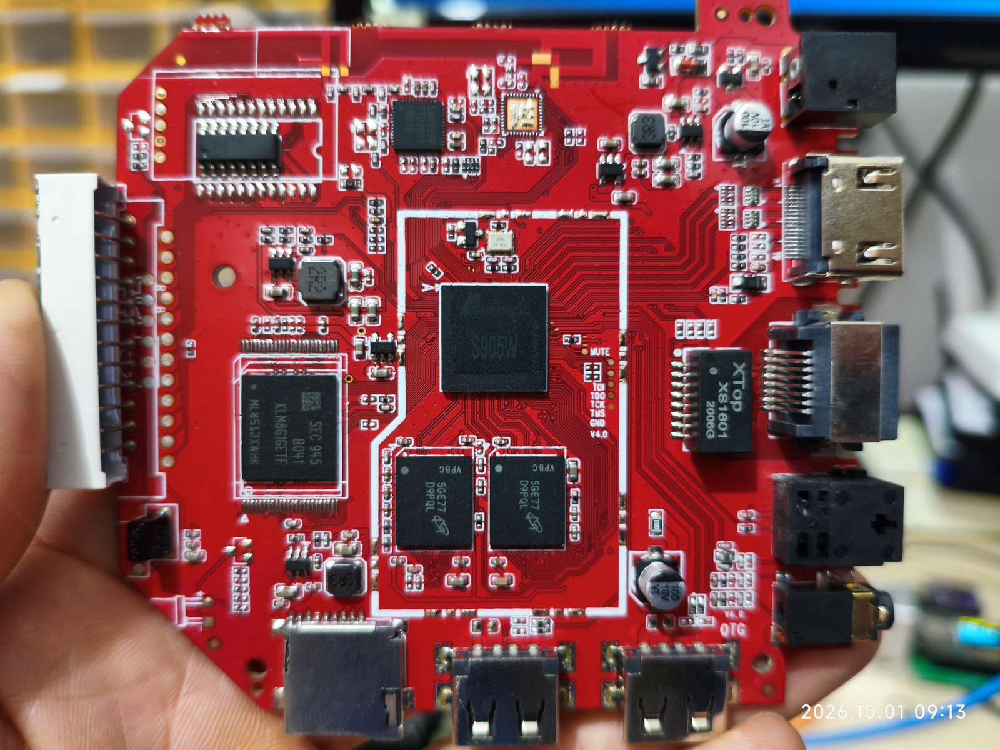
Placa real do TX9: ao centro o SoC Amlogic S905W, à esquerda a eMMC (Samsung KLM8G1GETF), abaixo a RAM DDR e, à direita, os pads JTAG (TDI/TDO/TCK/TMS/GND).
Não há "perguntar e ouvir": sem a descrição correta, o kernel simplesmente não enxerga o periférico. Esse mapa é o Device Tree.
O papel do DTB
O DTS (texto) descreve o hardware em uma árvore hierárquica — parecida, conceitualmente, com um XML, mas com sintaxe própria. Ele é compilado no DTB (binário) que o kernel lê. Clique num nó e veja o componente acender na placa.
As três plataformas estudadas: TX9, MXQ Pro e BTV11.
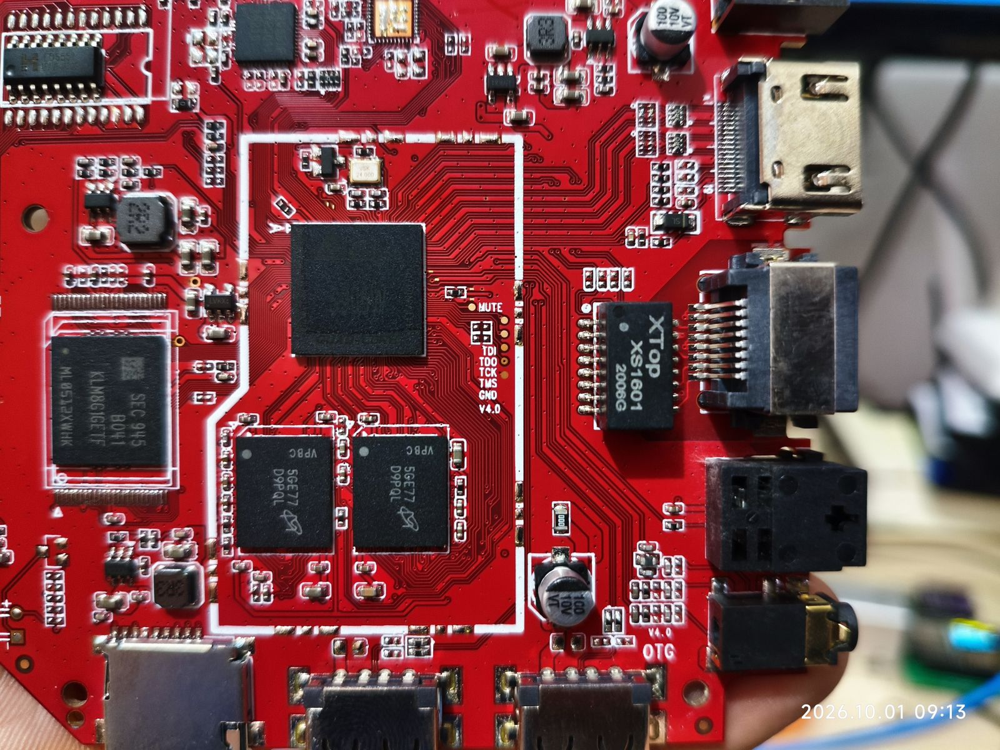
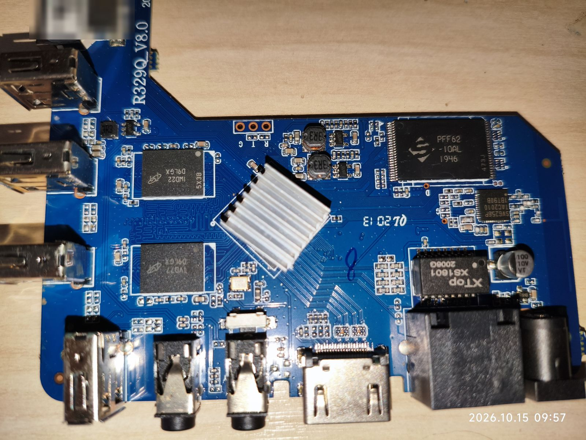
Partimos do Android em funcionamento para extrair o DTB pelo espaço de usuário — sem abrir a caixa nem arriscar a memória:
Android rodandoacesso via ADB
→
Espaço de usuário/proc/device-tree · partição dtb
→
.dtb → .dtsdescompilar com dtc
→
Análiseendereços, pinos, clocks
⚠ O DTB lido do sistema em execução pode conter modificações feitas pelo bootloader. Serve de ponto de partida, não de verdade absoluta.
O problema não termina no DTB
DTB não é driver. Ele apenas descreve o hardware para o kernel associar o driver certo. E componentes externos exigem muito mais do que uma descrição.
🧩 Controladores internos do SoC
Descritos no DTB e, em geral, já têm driver mantido no kernel. Ex.: controlador de eMMC, UART, GPIO.
DTB + driver do kernel ⟶ costuma funcionar.
📶 Componentes externos (ex.: Wi-Fi)
Não basta descrever. É preciso reunir e alinhar cinco camadas:
1 · Driver específico do chip (SSV6051)
2 · Firmware carregado no boot
3 · Pinmux correto (função dos pinos)
4 · Alimentação / regulador (power)
5 · Sequência de inicialização
Ter o DTB original ajuda a identificar o hardware, mas não garante compatibilidade com um kernel mais recente. É preciso adaptar descrições, drivers e firmware — um a um.
Drivers: o que tivemos que resolver
Começamos pelo driver de rede. A cada avançar, um novo periférico: o driver que portamos ou adaptamos — com a imagem correspondente.
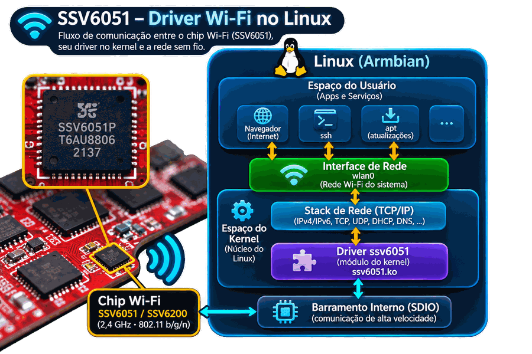
▶ 3D ao vivo · GPU Mali-450
Demo 3D — cavalo (Mali-450)_ ▢ ✕
Demo 3D — planos (Mali-450)_ ▢ ✕
Driver de rede: o chip Wi-Fi SSV6051 fala com o kernel (módulo ssv6051.ko) pelo barramento SDIO até a interface wlan0.
fora do padrão, via GPIO (bit-bang) → driver próprio p/ dígitos e relógio
📡 Receptor IRresolvido
controle sem mapa de teclas → keymap do controle + meson-ir
🎮 GPU Mali-450resolvido
sem aceleração gráfica → módulo mali / lima habilitado
🔊 Áudio HDMI/SPDIFresolvido
sem som → snd-soc-meson configurado
🌐 Ethernet · eMMC · USBresolvido
controladores internos do SoC → suportados no kernel 6.12 · chegamos ao limite da rede (LAN ~100 Mb/s)
⚠
Contribuição inédita: não encontramos nenhum port funcional do driver do Wi-Fi SSV6051 para kernels modernos. Nós o adaptamos, colocamos em funcionamento e publicamos os resultados.
“Descaracterização de TV Box TX9 para Armbian Linux: para uso como plataforma de computação embarcada educacional” — Beninca, Rauta, Goulart, Klein & Santos · SEPEI 2026 · IFSC
Juntamos as peças sobre um kernel moderno, construindo a pilha de baixo para cima:
🔩 Hardware da placa (SoC + periféricos)
🗺️ Device Trees adaptados por plataforma
🐧 Kernel Linux 6.12 (atual, mantido)
⚙️ Drivers + firmware + pinmux + power
📦 Espaço de usuário / aplicações
Por que kernel 6.12? O firmware de fábrica trava em kernels antigos (3.14) com Android mascarado. Um kernel atual traz segurança, correções e suporte da comunidade.
Saída do Ubuntu: decisão de reduzir manutenção e duplicação, dada a proximidade técnica com o Debian — e observando as regras de marca ao distribuir versões modificadas.
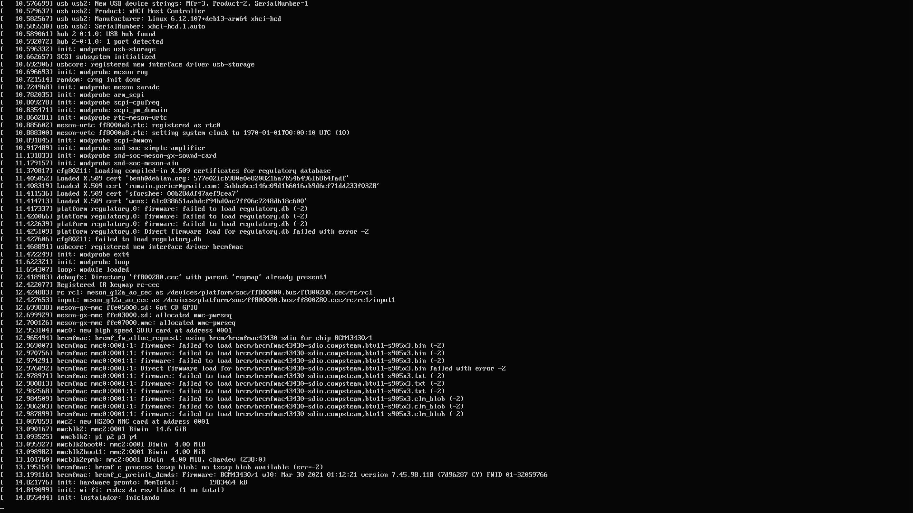
Boot real: Linux 6.12 subindo no box — meson-gx-mmc, eMMC de 14,6 GiB e módulos sendo carregados.
Instalação automatizada, passo a passo
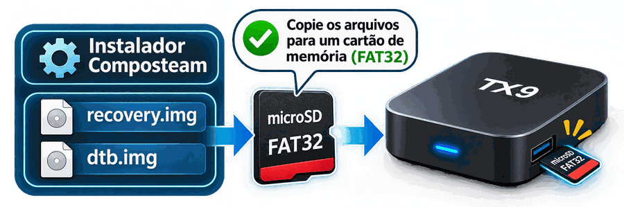
① Prepare um cartão/pendrive FAT32 com recovery.img e dtb.img e ligue pelo modo USB do bootloader de fábrica — sem abrir a caixa.
① Bootloader de fábrica
modo USB, sem abrir a caixa
② Procura o servidor
sobe pela RAM e busca as imagens na rede
③ Lista de imagens
escolha do sistema a instalar
④ Confirmação
usuário confirma a instalação
⑤ Identificação
usuário se identifica (só para documentação)
⑥ Gravação da imagem
com verificação SHA-256
⑦ Sistema iniciado
CompSTEAM Educação pronto para uso
Espaço do usuário: sistemas para a plataforma
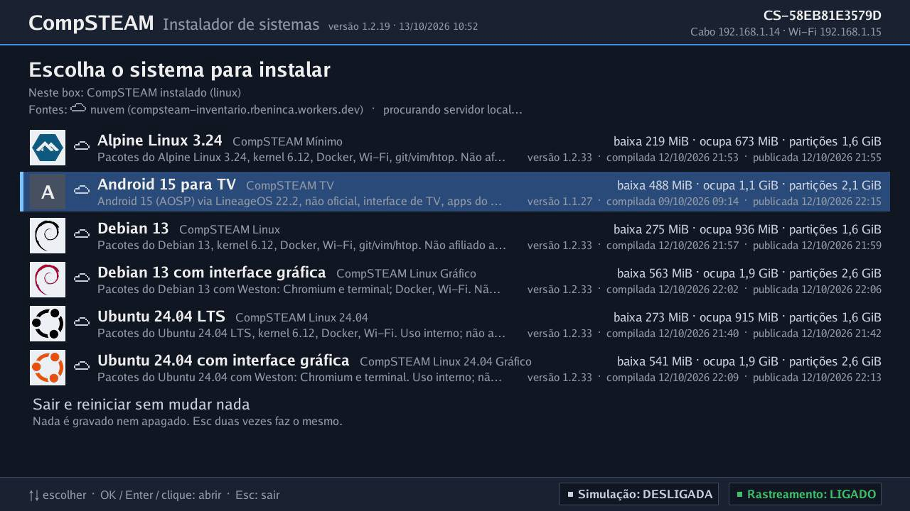
Nosso instalador da plataforma: escolhe entre os sistemas compilados — Alpine, Debian 13, Debian gráfico, Android 15 e Ubuntu 24.04 — todos sobre kernel 6.12.
Validado nas três plataformas: TX9 · MXQ Pro · BTV11 — Alpine e Debian ✔ · Android ◐ em evolução.
Aplicações práticas desenvolvidas
⚖️ Balança digital
🖥️ Docker + servidor web
🖨️ Impressão 3D + IA
📸 Mural Instagram
Célula de carga → HX711 → TV Box → GFIG: medimos o empuxo de motores de foguete — curva de propulsão, impulso e classe NAR.
Vídeo real da medição do empuxo de um motor de foguete no banco de testes.
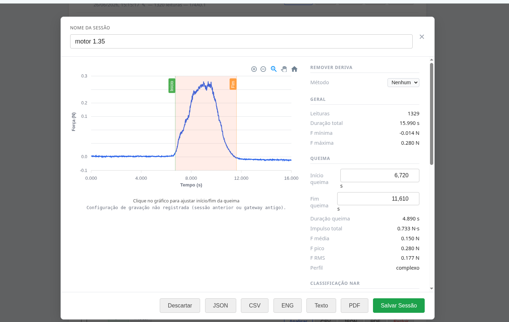
GFIG rodando no box: 1329 leituras, F pico 0,280 N, impulso total 0,733 N·s — curva de empuxo do motor.
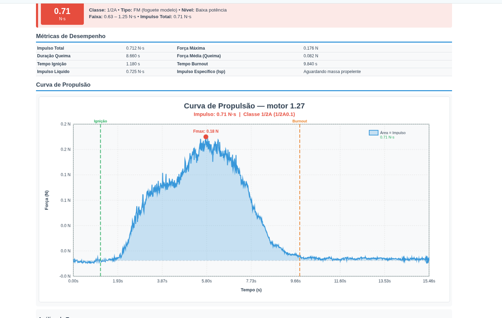
Relatório gerado automaticamente: curva de propulsão, impulso 0,71 N·s, classe 1/2A e métricas de desempenho.
A TV Box vira um pequeno servidor: serviços isolados em contêineres Docker, acessados por toda a rede.
🌐
Servidor web
🗄️
Banco de dados
📊
Dashboard
🔐
Proxy / TLS
📁
Arquivos
🔁
Automação
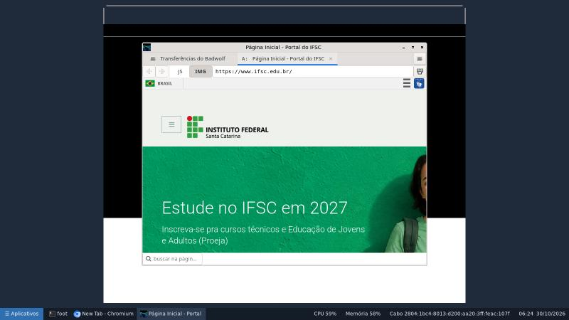
O mesmo box rodando desktop gráfico real (Chromium no portal do IFSC) — CPU e memória monitorados na barra. Infraestrutura de baixo custo.
Impressora 3D ↔ Klipper / Moonraker / Mainsail na TV Box ↔ servidor MCP ↔ agente de IA
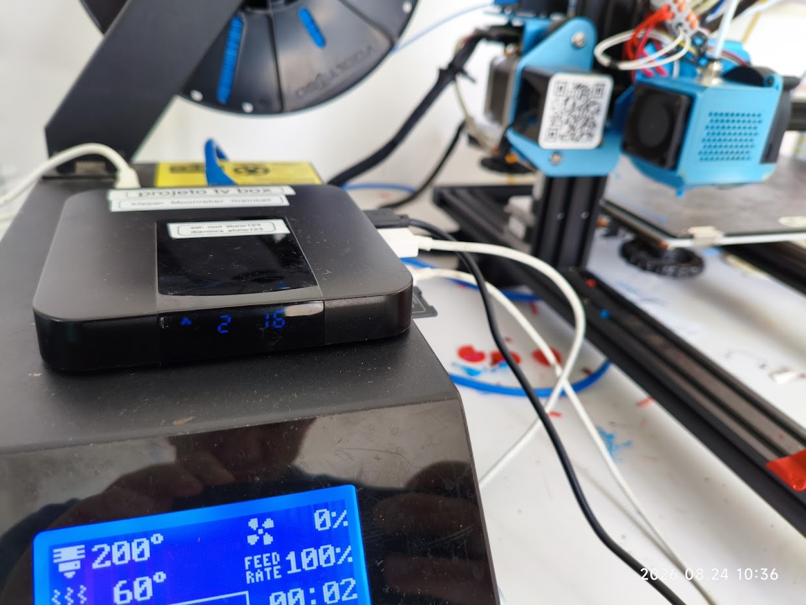
TX9 com Klipper/Moonraker/Mainsail controlando a impressora — LCD em 200°/60°, feed 100%.Impressão em andamento, comandada pela TV Box.
👁️ Monitoramento lê a telemetria
💡 Recomendação da IA sugere ajuste
✅ Comando executado dentro dos limites
A IA analisa, identifica anomalias e sugere ajustes — mas não substitui as proteções de segurança do Klipper. Só executa o que está autorizado e dentro dos limites.
Mural de publicidade: a TV Box exibe o feed do Instagram (@ifsc.gaspar) como sinalização digital — campanhas, comunicados e avisos nas TVs do campus.
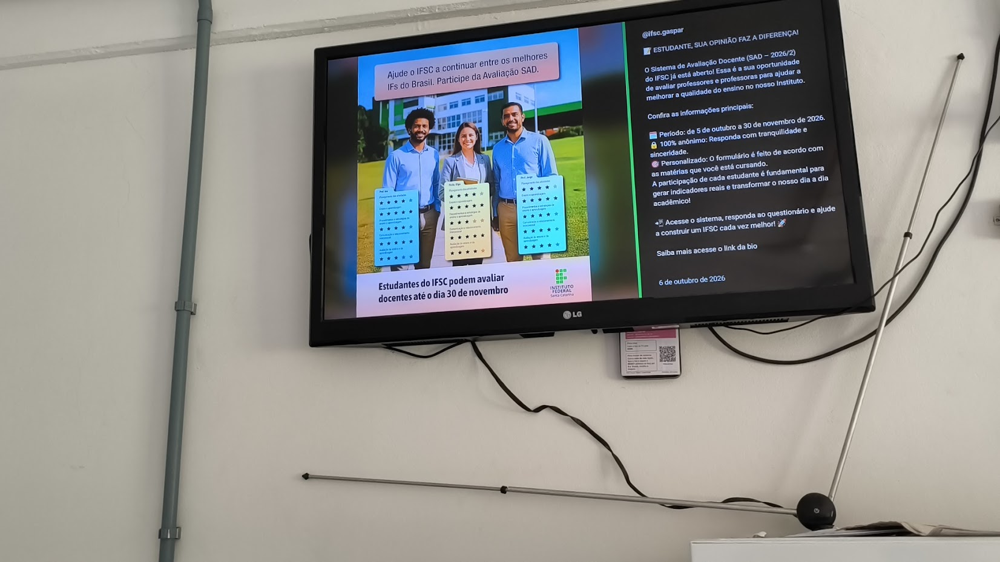
Recepção da copa/servidores — post da Avaliação Docente (SAD) direto do Instagram.
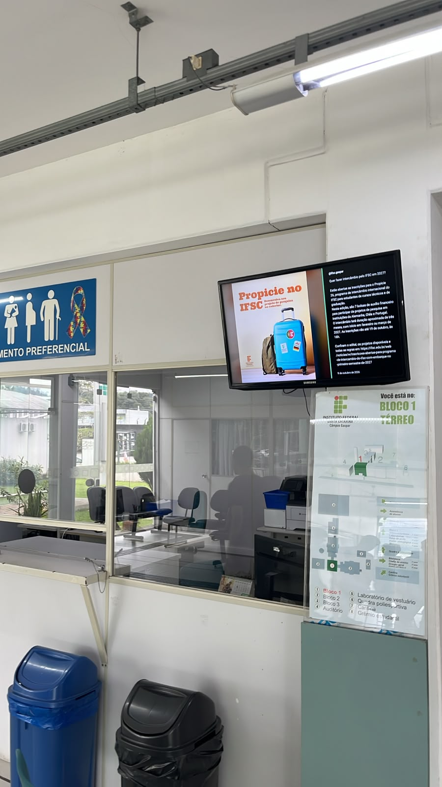
Recepção do Bloco 1 — campanha de intercâmbio exibida no mural.
O gargalo: infraestrutura para compilar e testar
Todo esse avanço depende hoje de um único computador pessoal. Falta recurso
computacional dedicado para compilar o Android e rodar a bateria de
testes nas três plataformas — e não há estrutura para o backup seguro das
imagens e do progresso do projeto.
🎬 Registro do ambiente real: a compilação e os testes rodando no computador pessoal do autor.
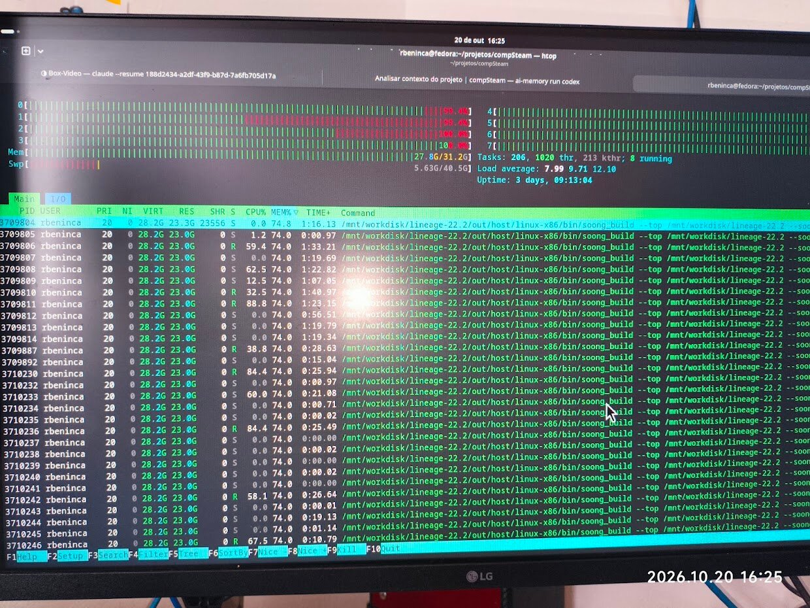
📷 Estação única em que todo o build e os testes são executados hoje.
⏳
~10 horas
por compilação completa do Android — cada ajuste exige recomeçar o build.
🧪
dias
para rodar a bateria de testes em cada box (TX9 · MXQ Pro · BTV11), um de cada vez.
💾
sem backup
não há armazenamento dedicado para proteger imagens, logs e progresso — risco de perda do trabalho.
💡 Com um servidor de build dedicado (CPU, memória e armazenamento) a compilação cairia de
horas para minutos, os testes rodariam em paralelo nas três plataformas e o
backup automático garantiria a continuidade — destravando o ritmo de todo o projeto.
De TV Box a plataforma computacional
📺📺📺
TX9 · MXQ Pro · BTV11
as três placas, uma plataforma aberta
🎓 Computador educacional
🖥️ Servidor / infraestrutura
⚖️ Balança / aquisição de dados
🖨️ Impressão 3D com IA
🔬 Plataforma científica e de desenvolvimento
Com a infraestrutura construída e os DTBs definidos, portar novos aparelhos deixou de ser engenharia reversa do zero: a mesma base de boot, kernel e instalador foi reaproveitada para trazer outros boxes à plataforma.
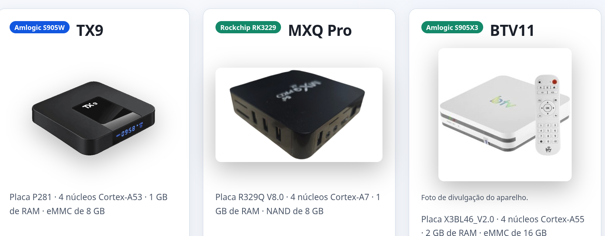
Os três aparelhos suportados e suas placas — TX9 / P281, MXQ Pro / R329Q e BTV11 / X3BL46.
Agradecimentos
Este trabalho só foi possível graças ao apoio de instituições e pessoas que disponibilizaram
tempo, espaço, equipamentos e conhecimento.
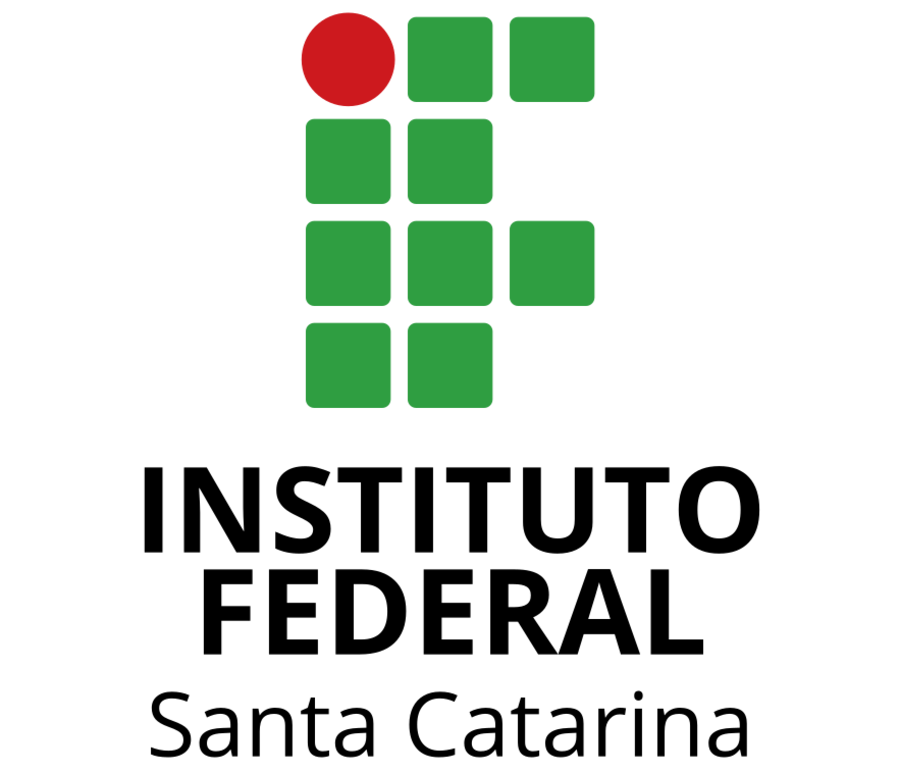
IFSC · Câmpus Gaspar
À direção (Dra. Glaucia Marian Tenfen) e à chefia do DEPE (Geannine Martins),
pela disponibilização de tempo e espaço para a realização do desenvolvimento.
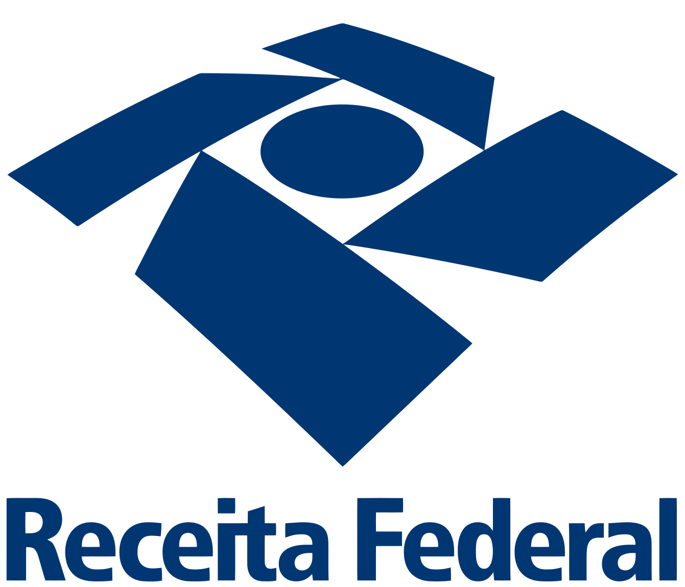
Receita Federal
Pela disponibilização dos
dispositivos que tornaram possível a engenharia reversa e os testes do projeto.
👥 Colegas que apoiaram o desenvolvimento
Leonardo Rauta · Professor de InformáticaKélcio César Goedert · Servidor da Receita Federal
Pelo apoio técnico e pela colaboração ao longo do desenvolvimento do projeto.
📺 → 🐧 → 🚀
“Não estamos apenas instalando outro sistema operacional.
Estamos recuperando o controle do hardware para transformá-lo
em uma plataforma aberta de computação, ensino e desenvolvimento tecnológico.”